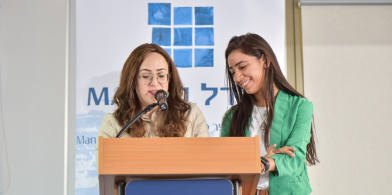
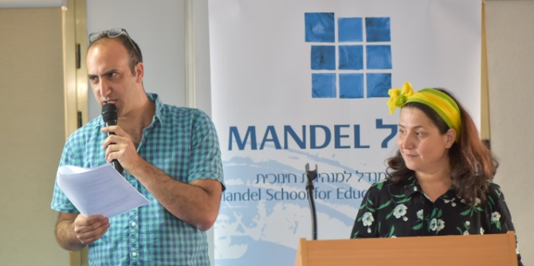

"הצלחתה של קרן מנדל היא מה שהבוגרים שלנו עושים בשטח – שיפור איכות החיים, החינוך והחברה. כל אחד מכם ידליק את הנר שלו, עם הפרויקט שלו, עם תוצר הלמידה שלו, וכך תתרמו ליצירת חברה טובה יותר ולהארת העולם באור טוב יותר", אמר מנכ"ל קרן מנדל-ישראל משה ויגדור.

באירוע, שנמשך יומיים, הציגו 21 עמיתי המחזור את פירות מסעם הלימודי לפני עמיתי בית הספר, המנחים וסגל בית הספר שליווה אותם לאורך לימודיהם, ולמומחים משדה החינוך. למסע הלימוד ה"מנדלי" שלושה מרכיבים עיקריים: א. חידוד הזהות המקצועית באמצעות עיון, למידה, בירור השקפות העולם וגיבוש חזון. ב. לימוד שדה התוכן – הן ברמה המחקרית-תאורטית והן ברמת המעשה. ג. גיבוש הצעה להתערבות ולמעשה בעולם החינוך.

"לא כל הזרעים שנזרעו פה במהלך השנתיים כבר בשלו ונבטו" אמר דני בר גיורא, מנהל בית ספר מנדל למנהיגות חינוכית. "אני משוכנע שהצידה שאתם לוקחים אתכם תשפיע בכל מקום ובכל תפקיד שבו תהיו, ואת התשובה לשאלה עד כמה הצלחתם להביא לידי ביטוי ומימוש את החלום, תבקשו, כך אני מציע, בעוד חמש שנים מהיום".
לצפייה בחוברת תחומי העניין של עמיתי מחזור כ"ו הקליקו
כאן

{kind=link}
{kind=link}